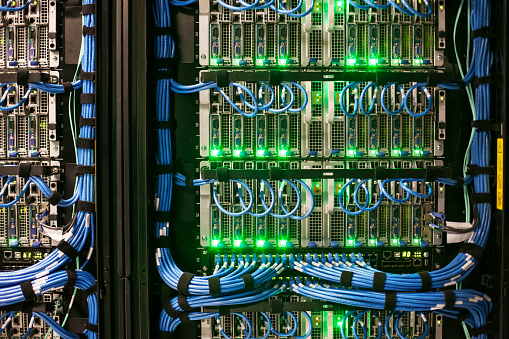

| GLPI | GLPI est un logiciel libre de gestion des services informatiques et de gestion des services d'assistance. Cette solution libre est éditée en PHP et distribuée sous licence GPL. | |
| Les serveurs | Un serveur informatique est un dispositif informatique qui offre des services à un ou plusieurs clients. | |
| Les réseaux | Un réseau informatique est un ensemble d'équipements reliés entre eux pour échanger des informations |  |